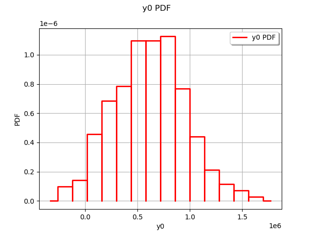
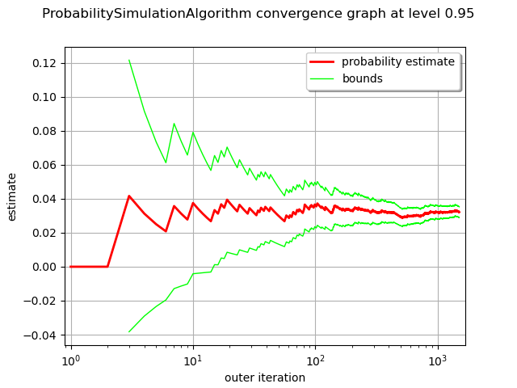

Note
Go to the end to download the full example code
Estimate a probability with Monte-Carlo on axial stressed beam: a quick start guide to reliability¶
The goal of this example is to show a simple practical example of probability estimation in a reliability study with the ProbabilitySimulationAlgorithm class. The ThresholdEvent is used to define the event. We use the Monte-Carlo method thanks to the MonteCarloExperiment class to estimate this probability and its confidence interval. We use the axial stressed beam model as an illustrative example.
Definition of the model¶
from openturns.usecases import stressed_beam
import openturns as ot
import numpy as np
import openturns.viewer as viewer
ot.Log.Show(ot.Log.NONE)
We load the model from the usecases module :
sm = stressed_beam.AxialStressedBeam()
The limit state function is defined as a symbolic function in the model parameter of the AxialStressedBeam data class:
limitStateFunction = sm.model
Before using the function within an algorithm, we check that the limit state function is correctly evaluated.
x = [3.0e6, 750.0]
print("x=", x)
print("G(x)=", limitStateFunction(x))
x= [3000000.0, 750.0]
G(x)= [612676]
Probabilistic model¶
We load the first marginal, a univariate LogNormal distribution, parameterized by its mean and standard deviation:
R = sm.distribution_R
We draw the PDF of the first marginal.
graph = R.drawPDF()
view = viewer.View(graph)

Our second marginal is a Normal univariate distribution:
F = sm.distribution_F
We draw the PDF of the second marginal.
graph = F.drawPDF()
view = viewer.View(graph)

In order to create the input distribution, we use the ComposedDistribution class which associates the distribution marginals and a copula. If no copula is supplied to the constructor, it selects the independent copula as default. That is implemented in the data class:
myDistribution = sm.distribution
We create a RandomVector from the Distribution, which will then be fed to the limit state function.
inputRandomVector = ot.RandomVector(myDistribution)
Finally we create a CompositeRandomVector by associating the limit state function with the input random vector.
outputRandomVector = ot.CompositeRandomVector(limitStateFunction, inputRandomVector)
Exact computation¶
The simplest method is to perform an exact computation based on the arithmetic of distributions.
D = 0.02
G = R - F / (D ** 2 / 4 * np.pi)
G.computeCDF(0.0)
0.029198194624830504
This is the exact result from the description of this example.
Distribution of the output¶
Plot the distribution of the output.
sampleSize = 500
sampleG = outputRandomVector.getSample(sampleSize)
graph = ot.HistogramFactory().build(sampleG).drawPDF()
view = viewer.View(graph)

Estimate the probability with Monte-Carlo¶
We first create a ThresholdEvent based on the output RandomVector, the operator and the threshold.
myEvent = ot.ThresholdEvent(outputRandomVector, ot.Less(), 0.0)
The ProbabilitySimulationAlgorithm is the main tool to estimate a probability. It is based on a specific design of experiments: in this example, we use the simplest of all, the MonteCarloExperiment.
maximumCoV = 0.05 # Coefficient of variation
maximumNumberOfBlocks = 100000
experiment = ot.MonteCarloExperiment()
algoMC = ot.ProbabilitySimulationAlgorithm(myEvent, experiment)
algoMC.setMaximumOuterSampling(maximumNumberOfBlocks)
algoMC.setBlockSize(1)
algoMC.setMaximumCoefficientOfVariation(maximumCoV)
In order to gather statistics about the algorithm, we get the initial number of function calls (this is not mandatory, but will prove to be convenient later in the study).
initialNumberOfCall = limitStateFunction.getEvaluationCallsNumber()
Now comes the costly part: the run method performs the required simulations. The algorithm stops when the coefficient of variation of the probability estimate becomes lower than 0.5.
algoMC.run()
We can then get the results of the algorithm.
result = algoMC.getResult()
probability = result.getProbabilityEstimate()
numberOfFunctionEvaluations = (
limitStateFunction.getEvaluationCallsNumber() - initialNumberOfCall
)
print("Number of calls to the limit state =", numberOfFunctionEvaluations)
print("Pf = ", probability)
print("CV =", result.getCoefficientOfVariation())
Number of calls to the limit state = 12031
Pf = 0.03225002077965262
CV = 0.04994197610599742
The drawProbabilityConvergence method plots the probability estimate depending on the number of function evaluations.
The order of convergence is  with
with  being the number of function evaluations.
This is why we use a logarithmic scale for the X axis of the graphics.
being the number of function evaluations.
This is why we use a logarithmic scale for the X axis of the graphics.
graph = algoMC.drawProbabilityConvergence()
graph.setLogScale(ot.GraphImplementation.LOGX)
view = viewer.View(graph)

We see that the 95% confidence interval becomes smaller and smaller and stabilizes at the end of the simulation.
In order to compute the confidence interval, we use the getConfidenceLength method, which returns the length of the interval. In order to compute the bounds of the interval, we divide this length by 2.
alpha = 0.05
pflen = result.getConfidenceLength(1 - alpha)
print(
"%.2f%% confidence interval = [%f,%f]"
% ((1 - alpha) * 100, probability - pflen / 2, probability + pflen / 2)
)
95.00% confidence interval = [0.029093,0.035407]
This interval is consistent with the exact probability  .
.
Appendix: derivation of the failure probability¶
The failure probability is:
![P_f = \text{Prob}(R-S \leq 0) = \int_{r-s \leq 0} f_{R, S}(r, s)drds]()
where  is the probability distribution function of the random vector
is the probability distribution function of the random vector  .
If R and S are independent, then:
.
If R and S are independent, then:
![f_{R, S}(r, s) = f_R(r) f_S(s)]()
for any  ,
where
,
where  is the probability distribution function of the random
variable
is the probability distribution function of the random
variable  and
and  is the probability distribution function of the random variable
is the probability distribution function of the random variable  .
Therefore,
.
Therefore,
![P_f = \int_{r-s \leq 0} f_R(r) f_S(s) drds.]()
This implies:
![P_f = \int_{-\infty}^{+\infty} \left(\int_{r \leq s} f_R(r) dr \right) f_S(s) ds.]()
Therefore,
![P_f = \int_{-\infty}^{+\infty}f_S(s)F_R(s)ds]()
where  is the cumulative distribution function of the random variable .
is the cumulative distribution function of the random variable .